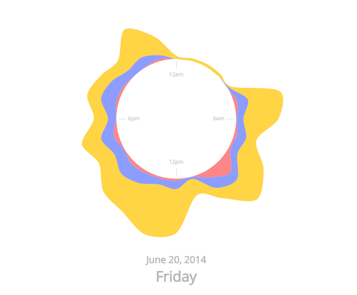

I started with looking at the data and figured that I had to make a quite small selection in order to demonstrate my prototype in a good way.
Therefore, I looked at the data from one of the households and decided to visualize the energy consumption during 24 hours.
Early on, I found a good visual model called "Stacked Radial Area" that I wanted to use for this project.
The model used csv import for loading data, so I structured my raw data accordingly:
I decided that the clock should represent 24 hours, so I began to experiment with importing the data, which was a pretty easy procedure. However, the visualization didn't look so good initially since there where different values and units for the energy and the water consumption. Therefore, I started to do some transformations to the data to represent it in a better way, but at the same time I figured that the minimalist view didn't necessary require exact representations. Instead, I put more time to test out different colors to convey the right feelings, since that's something important in ambient visualizations. I used paint and tossed around ideas with my girlfriend to find the right balance:

My final visualization looks like this:
The colors is picked out to connect the data with what's most intuitive for the user; red for hot water, blue for cold water and yellow for electricity. These are colors that the user can
find in other places of the household, for example on water taps. When touching/hovering, the user gets details on demand like the specific date for the 24h-clock and some reference axis lines.
Something that I didn't have time to add, but that I think should be included, is the possibility to swipe/click on arrows to change the date. This is something that would be really nice to have implemented I think.